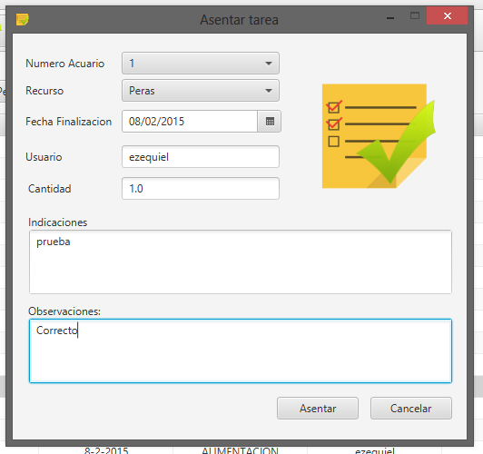

Ya tenemos nuestras actividades y mediciones planificadas, y una de las actividades fue realizada recientemente, el próximo paso a seguir es sin demora, asentar su realización en el sistema, veremos a continuación como se realiza el asentamiento de una actividad:
Desde la pantalla principal de la planificación, deberá seleccionarse en la lista desplegada, la actividad que se desee asentar, una vez seleccionada se desplegará una ventana similar a la siguiente:

con la información de planificación de la actividad.
Es momento de asentarla, por lo que se procederá a escribir las observaciones surgidas de su ejecución, y luego se seleccionará el botón ASENTAR, la actividad ahora se encontrará asentada como realizada en el sistema.
IMPORTANTE Pueden surgir ALERTAS asociadas a la no disponibilidad de un recurso para el asentamiento de una actividad, debe revisarse periódicamente la sección de ALERTAS luego de efectuar una tarea que pueda generar alguna.
¿Cómo se asientan las mediciones planificadas?
Created with the Personal Edition of HelpNDoc: Easy CHM and documentation editor